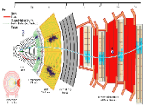

Scientists design and deploy instruments guided by the questions they are asking, available technologies and cost of materials.
|  CMS Detector Slice | CMS is a complex detector. Grasp the basic structure and function of the detector, the order and roles of the sub-detectors. Click on the interactive graphic. |
In your logbook:
To Learn More:
USCMS's CMS Detector - Interactive diagram with roll-over explanations of sub-detectors and US contributions from USCMS
The CMS Detector - Short description and interactive image with photos and drawings of the sub-detectors from the CMS website
How does it work? - Description with the interactive graphic slice above from the CMS website
How a Detector Works - Descriptions of the sub-detectors and animation of particles from the CERN Website
Modern Detectors - Extensive information about modern accelerators and detectors from the Particle Adventure